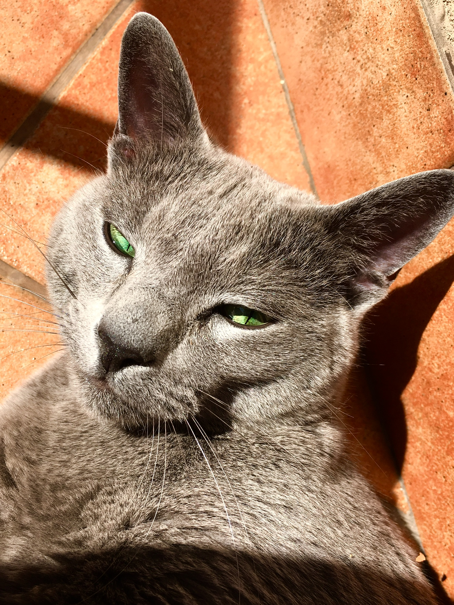
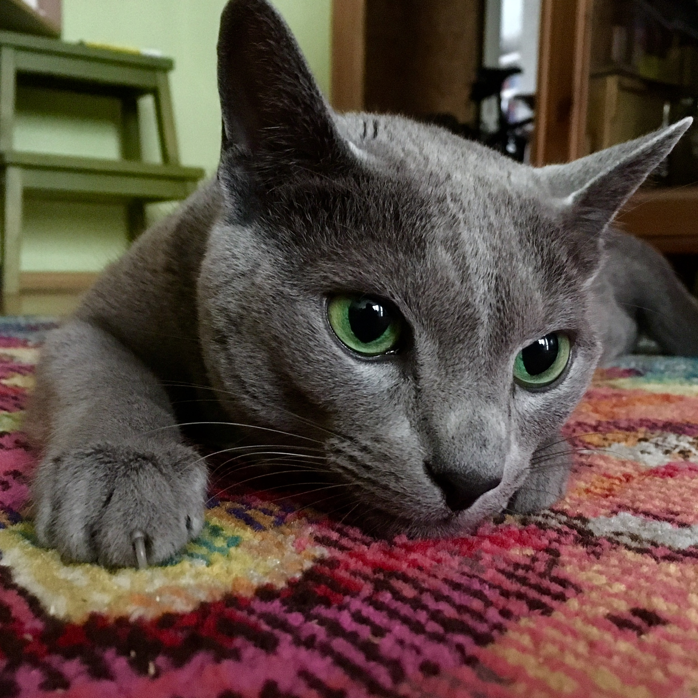
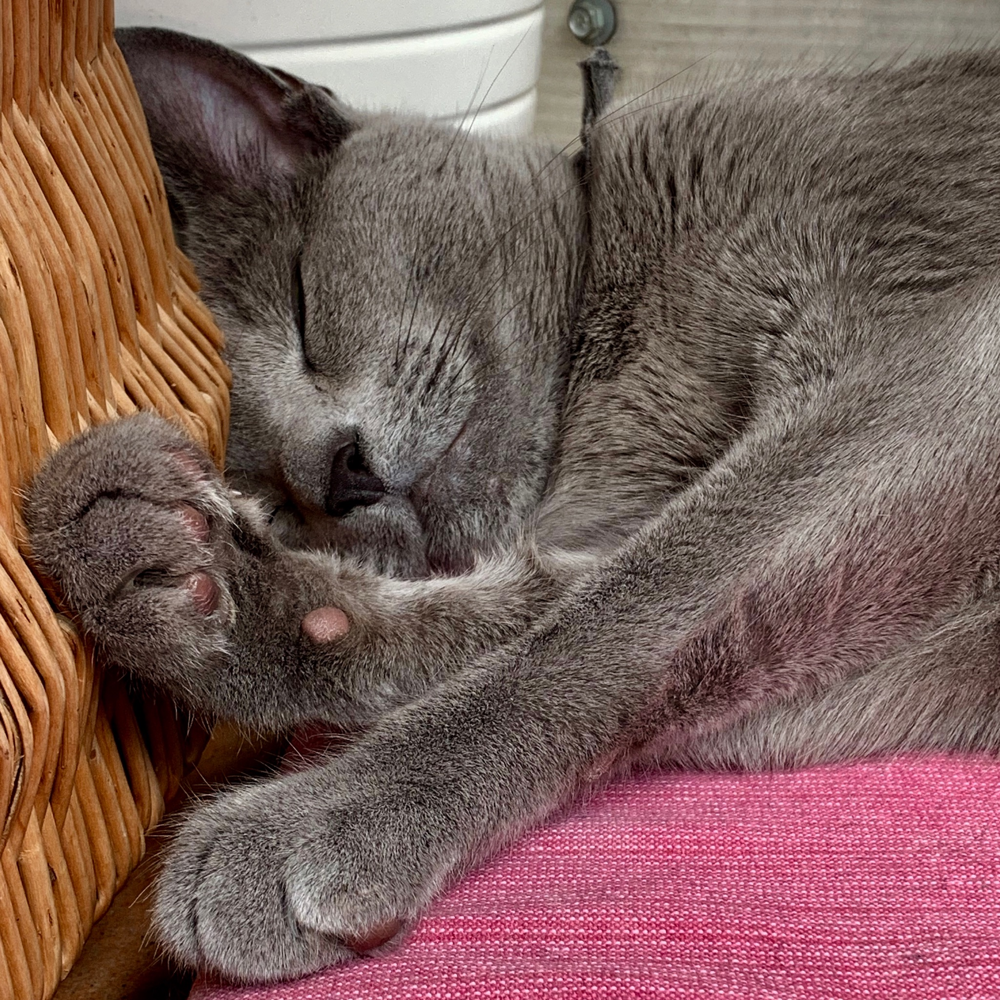
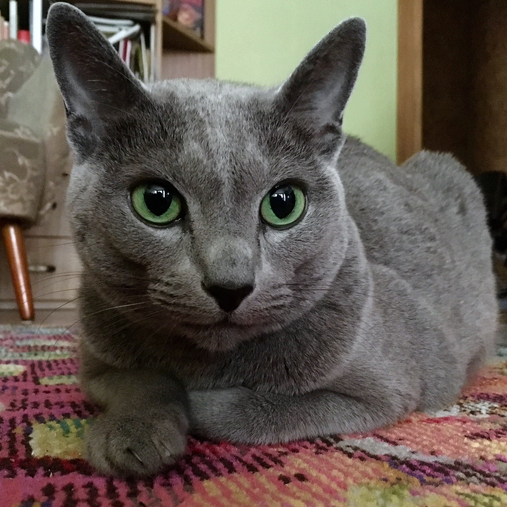
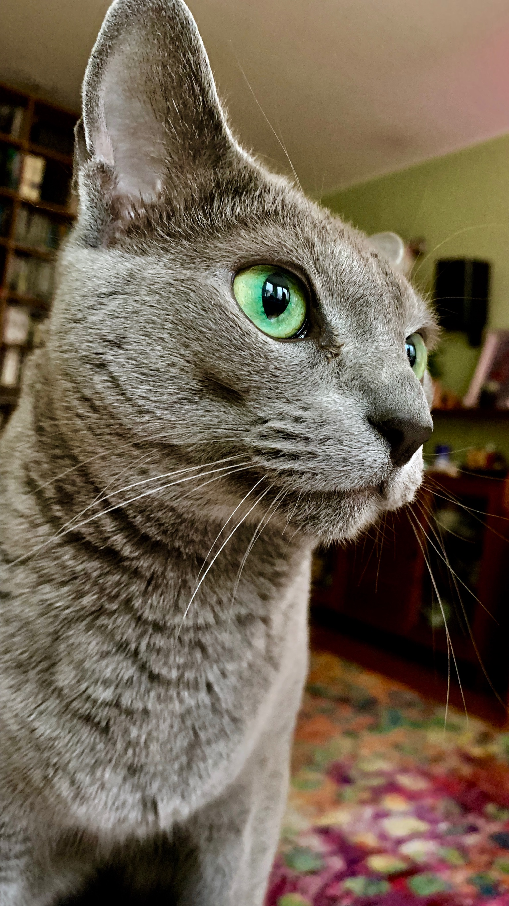

Kotyyy
Koty





Koty
Lemat wszystkie koty są piękne.
Dowód Każdy bliżej zaznajomiony z
językiem logiki matematycznej i rachunku kwantyfikatorów
spostrzeże, że tezę można zapisać tak:
$$\forall x\ldotp Kot(x) \to Pi\textit{ę}kny(x).$$
Bez straty ogólności możemy rozważyć tego kota:
Istotnie, jest on bardzo piękny (trywialny fakt). Przeto koci lemat
jest prawdziwy.
Kot erat demonstrandum